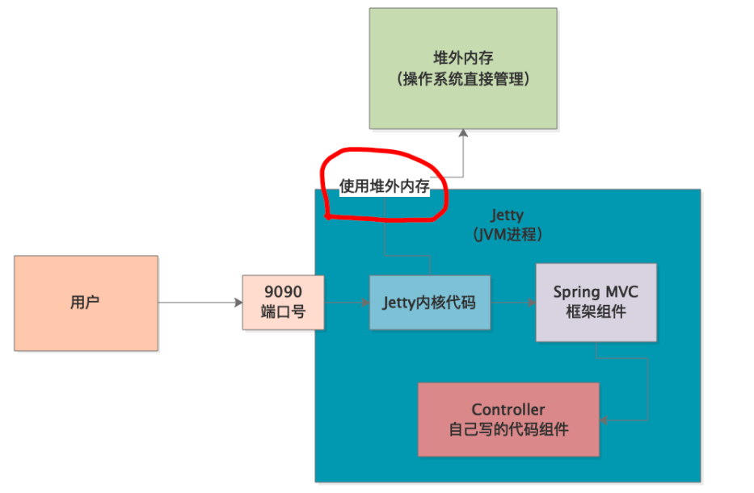
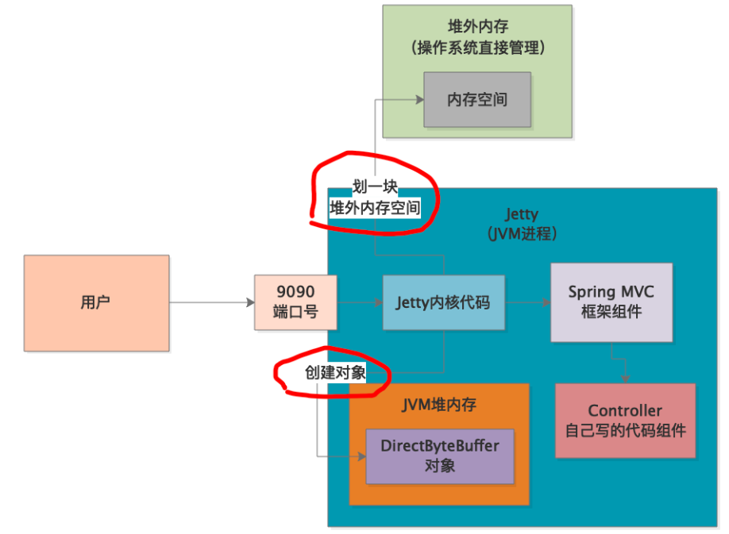
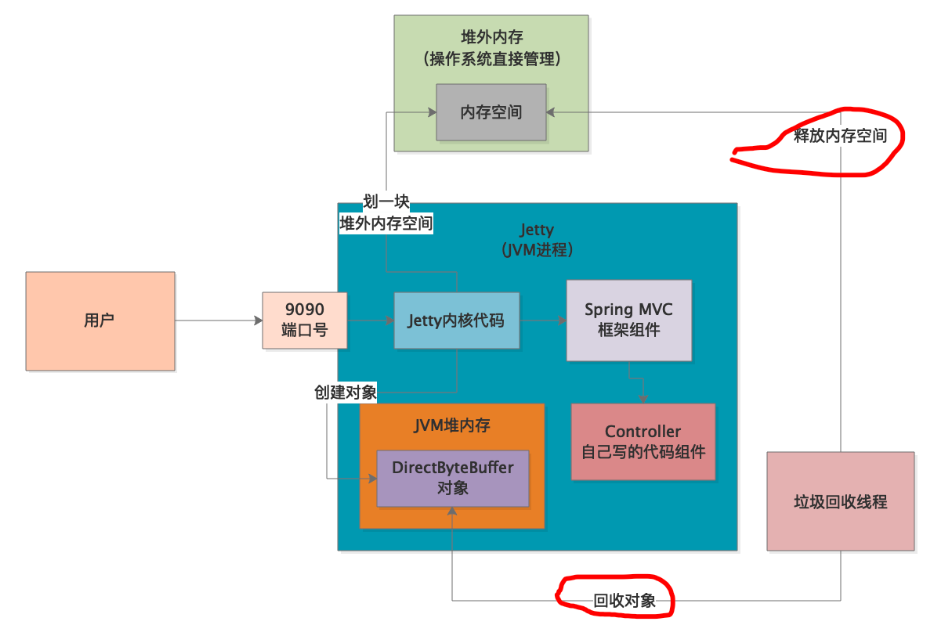
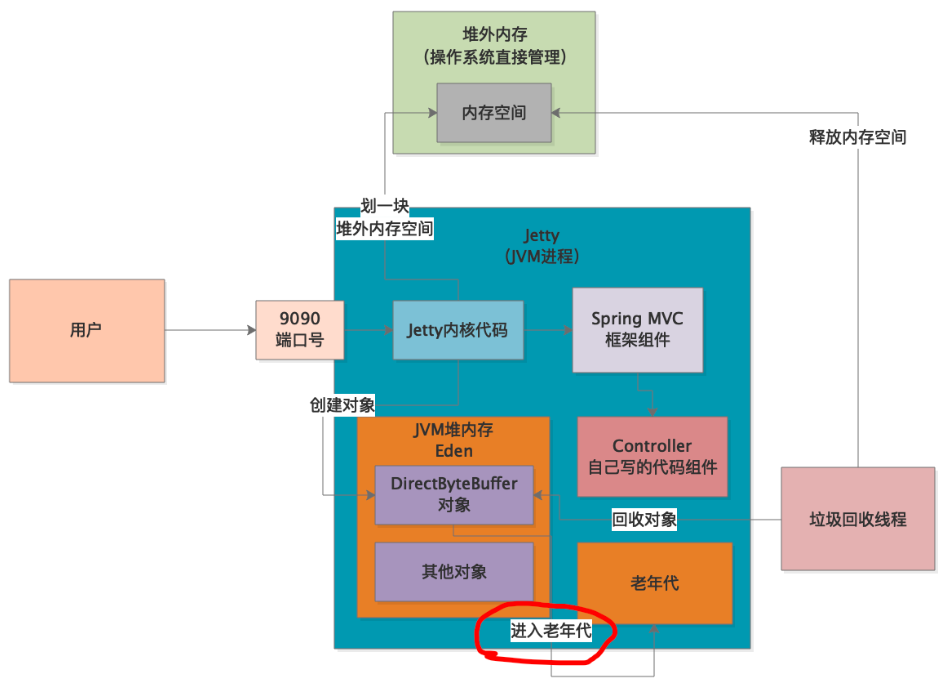

本章，我们将讲解一个使用Jetty作为Web容器的应用的内存溢出问题，该内存溢出问题发生的区域是堆外内存，主要原因是JVM内存区域划分不合理，我们先来看下系统的背景。
生产环境的一个系统发生告警，拿到生产日志后出现如下字样：
nio handle failed java.lang.OutOfMemoryError: Direct buffer memory
at org.eclipse.jetty.io.nio.xxxx
at org.eclipse.jetty.io.nio.xxxx
at org.eclipse.jetty.io.nio.xxxx
通过日志，我们可以知道是Direct buffer memory这块区域发生了内存溢出异常，而且下面还有一大堆Jetty相关的调用栈。
Direct buffer memory是什么？我们先来了解下这块区域。
Direct buffer memory——堆外内存，顾名思义是Java堆内存以外的一块内存区域，这块区域不受JVM管理，而由操作系统管理。我们的程序里并没有直接使用堆外内存，而且通过日志中的调用栈看到，是由Jetty引起的。也就是说，Jetty服务器可能在不停的使用堆外内存，然后堆外空间不足了，此时就抛出了内存溢出异常：

Jetty是采Java编写的Web容器，它的一些底层机制要求它需要使用到堆外内存。在Java中，要使用堆外内存，必须要用到DirectByteBuffer这个类，构建DirectByteBuffer对象的同时（DirectByteBuffer对象的引用本身在Java堆分配空间），就会在Java堆以外的内存空间划出一块区域，然后跟DirectByteBuffer对象关联起来：

当DirectByteBuffer对象失去所有引用，被垃圾回收器判定为垃圾对象时，就会在Young GC或Full GC时被回收掉，回收时也会将与它关联的那块堆外内存释放：

了解了系统的大致情况以及堆外内存的基本原理，我们大致可以推测出正是因为DirectByteBuffer对象长期没有被回收，导致堆外内存被大量占用，从而引发内存溢出。
那么，什么情况下会出现大量的DirectByteBuffer对象一直存活，导致大量的堆外内存也无法被释放呢？根据我们之前的学习经验，有三种可能：
根据监控系统的分析，系统的并发度并不高，程序日志显示也没有很多超时，所以很可能是因为JVM内存区域划分不合理或处理请求速度过慢导致的。
我们通过jstat分析发现，Jetty会不断的创建DirectByteBuffer对象，直到新生代Eden区满了，就会触发Young GC。但是，往往垃圾回收的一瞬间，很多请求还没处理完，所以只有部分DirectByteBuffer对象被回收，存活下来的DirectByteBuffer对象需要转移到Survivor区，但是Survivor区的大小只有10MB！所以，只能将DirectByteBuffer对象转移到老年代：

按道理说，即使因为程序处理过慢，导致Young GC不能回收掉DirectByteBuffer对象，那么DirectByteBuffer对象进入到老年代后，等程序处理完了，下次Full GC时也会被回收掉。但问题就出在了JVM内存空间划分不合理，我们发现系统上线时的JVM配置是这样的：新生代一共200MB左右的空间，其中每个Survivor区就10MB，老年代反而有800MB左右。
Survivor区的空间不足，导致DirectByteBuffer对象进入老年代，随着老年代中的DirectByteBuffer对象越来越多，这些DirectByteBuffer对象关联的堆外内存占用也会越来越多，此时很多老年代中的DirectByteBuffer对象已经是垃圾对象了，但是由于一直没达到触发老年代回收的阈值，所以也就没法Full GC，堆外内存也就是没法释放，最终导致堆外内存溢出。
Java NIO其实已经考虑到了上述DirectByteBuffer垃圾对象一直无法被回收的问题，它在每次分配堆外内存时，都会调用下System.gc()方法，提醒JVM主动去回收那些没人引用的DirectByteBuffer对象，从而释放其关联的堆外内存。
但是，我们的系统上线时设置了参数-XX:+DisableExplictGC，也就是屏蔽了程序中的System.gc()方法，最终导致了堆外内存溢出的发生。
分析清楚了原因，主要从两方面进行优化：
-XX:+DisableExplictGC，让System.gc()生效。生产环境原则上是要开启
-XX:+DisableExplictGC的，但是如果能够保证自己程序里不出现System.gc()，则可以关闭。
本章中，我们的案例之所以发生堆外内存溢出，其实是很多因素综合的结果。包括JVM内存划分不合理、处理请求速度较慢、屏蔽了System.gc()。
所以，生产环境一旦发生OOM异常，除去一些程序bug等很明显的原因，往往是比较难排查的，可能是很多因素综合在一起导致了内存异常，我们要做的就是抓住主要矛盾，先按照最基本的优化思路去分析。另外，从这个案例和之前的tomcat案例也可以看出，我们平时还是要多去了解一些开源框架的底层原理，这样才能在出现问题时直击要点并解决问题。